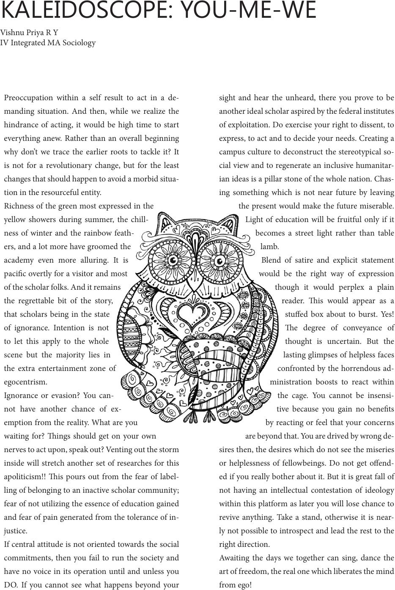

KALEIDOSCOPE: YOU-ME-WE
Vishnu Priya R Y
IV Integrated MA Sociology
Preoccupation within a self result to act in a de-
manding situation. And then, while we realize the
hindrance of acting, it would be high time to start
everything anew. Rather than an overall beginning
why don’t we trace the earlier roots to tackle it? It
is not for a revolutionary change, but for the least
changes that should happen to avoid a morbid situa-
tion in the resourceful entity.
Richness of the green most expressed in the
yellow showers during summer, the chill-
ness of winter and the rainbow feath-
ers, and a lot more have groomed the
academy even more alluring. It is
pacic overtly for a visitor and most
of the scholar folks. And it remains
the regrettable bit of the story,
that scholars being in the state
of ignorance. Intention is not
to let this apply to the whole
scene but the majority lies in
the extra entertainment zone of
egocentrism.
Ignorance or evasion? You can-
not have another chance of ex-
emption from the reality. What are you
waiting for? ings should get on your own
nerves to act upon, speak out? Venting out the storm
inside will stretch another set of researches for this
apoliticism!! is pours out from the fear of label-
ling of belonging to an inactive scholar community;
fear of not utilizing the essence of education gained
and fear of pain generated from the tolerance of in-
justice.
If central attitude is not oriented towards the social
commitments, then you fail to run the society and
have no voice in its operation until and unless you
DO. If you cannot see what happens beyond your
sight and hear the unheard, there you prove to be
another ideal scholar aspired by the federal institutes
of exploitation. Do exercise your right to dissent, to
express, to act and to decide your needs. Creating a
campus culture to deconstruct the stereotypical so-
cial view and to regenerate an inclusive humanitar-
ian ideas is a pillar stone of the whole nation. Chas-
ing something which is not near future by leaving
the present would make the future miserable.
Light of education will be fruitful only if it
becomes a street light rather than table
lamb.
Blend of satire and explicit statement
would be the right way of expression
though it would perplex a plain
reader. is would appear as a
stued box about to burst. Yes!
e degree of conveyance of
thought is uncertain. But the
lasting glimpses of helpless faces
confronted by the horrendous ad-
ministration boosts to react within
the cage. You cannot be insensi-
tive because you gain no benets
by reacting or feel that your concerns
are beyond that. You are drived by wrong de-
sires then, the desires which do not see the miseries
or helplessness of fellowbeings. Do not get oend-
ed if you really bother about it. But it is great fall of
not having an intellectual contestation of ideology
within this platform as later you will lose chance to
revive anything. Take a stand, otherwise it is near-
ly not possible to introspect and lead the rest to the
right direction.
Awaiting the days we together can sing, dance the
art of freedom, the real one which liberates the mind
from ego!